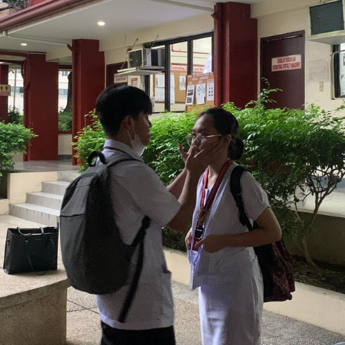
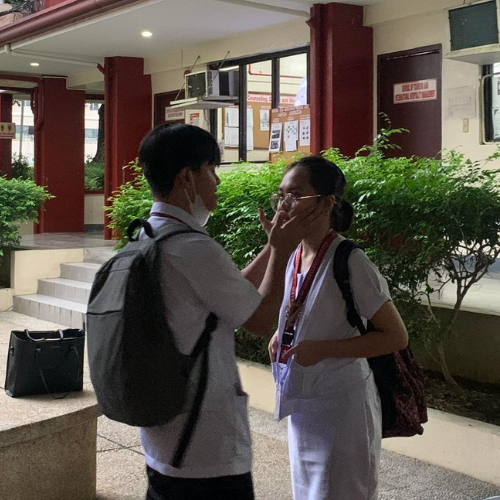

Playing Video Games
I really like to play video games such as Valorant, League of Legends and more!
Playing and Watching Basketball
I really like to play basketball when I have time. I also like to watch basketball in TV like NBA, PBA, and more.
Video and Audio Editing
Since I was a kid, I really love to edit videos and it became my passion for a long run. Audio editing became my hobby since 2020 when the pandemic is happening.
Singing
Believe it or not, I really like to sing especially when I was a kid. I used to sing in karaokes when there's a family gathering. Nowadays, I always sing on my own because my voice changed.
 
